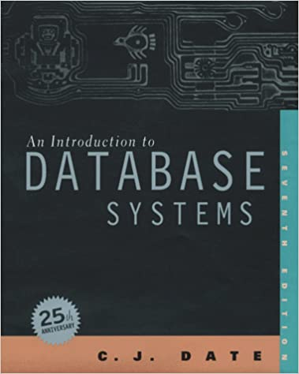

Introduction to Database Systems
C. J. Date

A comprehensive, up-to-date treatment of database technology.
This edition features: updated coverage of object-oriented database
systems, including a proposal for rapprochement between OO and relational
technologies; expanded treatment of distributed databases, including client/server
architectures, with an emphasis on database design issues; a comprehensive
introduction to all aspects of the relational model - the basis of modern
database technology; and new chapters on functional dependencies, views,
domains and missing.
Book price: Rs 1000